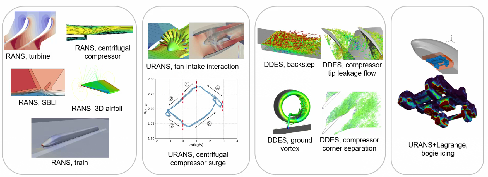

HADES: an in-house finitie volume aerodyanmics solver for internal and external flows.
SPOD_Python: an open-source Pythonic realization of SPOD and its applications to a range of fluid mechanics problems.
TurbAna: a Python toolkit that calculates and visualizes turbulence anisotropy and turbulent viscosity from Reynolds stress components.